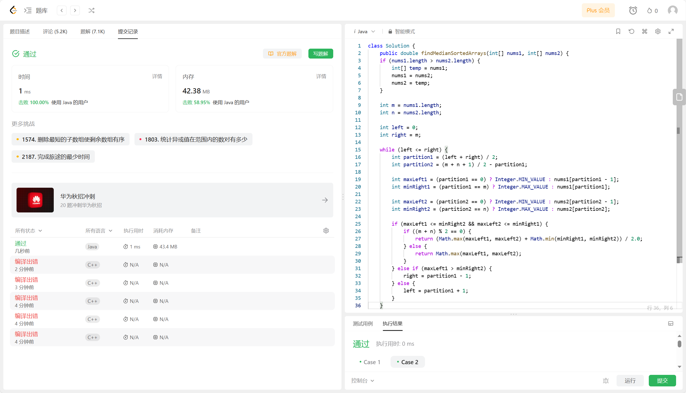

《三国演义》可大致分为黄巾起义、董卓之乱、群雄逐鹿、三国鼎立、三国归晋五大部分，描写了从东汉末年到西晋初年之间近百年的历史风云， 以描写战争为主，诉说了东汉末年的群雄割据混战和魏、蜀、吴三国之间的政治和军事斗争，最终司马炎一统三国，建立晋朝的故事。 反映了三国时代各类社会斗争与矛盾的转化，并概括了这一时代的历史巨变，塑造了一群叱咤风云的三国英雄人物。
《三国演义》（又名《三国志演义》《三国志通俗演义》 [45-46]）是元末明初小说家罗贯中根据陈寿《三国志》 和裴松之注解以及民间三国故事传说经过艺术加工创作而成的长篇章回体历史演义小说，与《西游记》《水浒传》《红楼梦》并称为中国古典四大名著。
《三国演义》是罗贯中在有关三国故事的宋元话本、戏曲和轶事传闻的基础上，依据晋代陈寿所著的《三国志》以及南朝宋人裴松之为《三国志》所作的注， 所进行的加工再创作。 [34]
